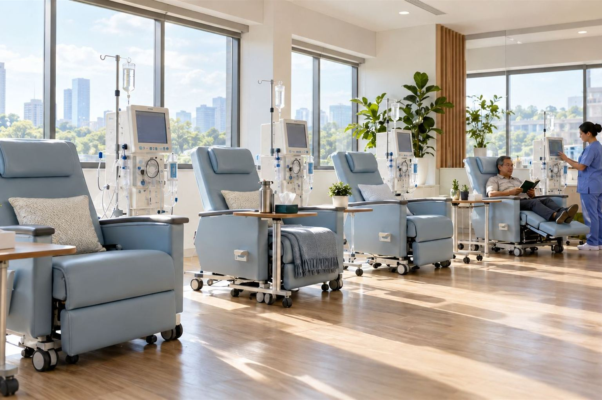
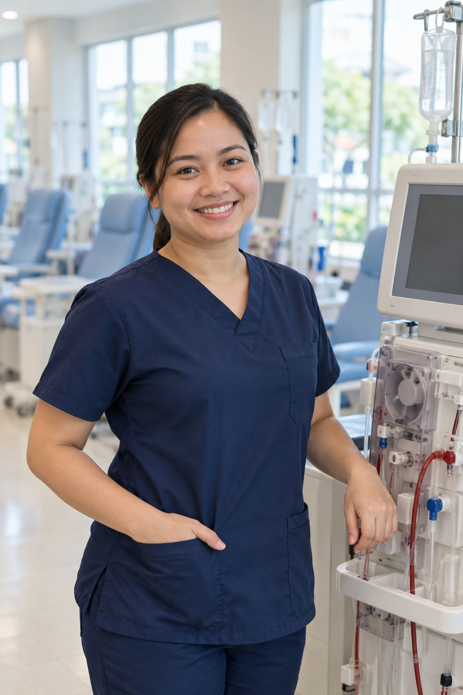
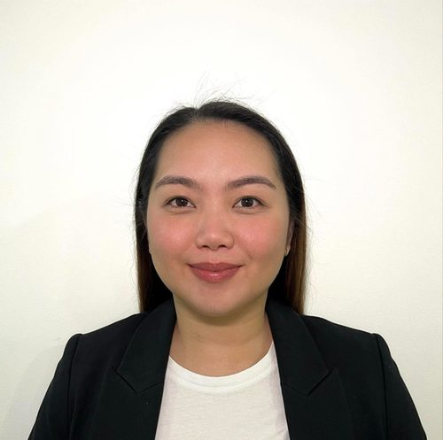
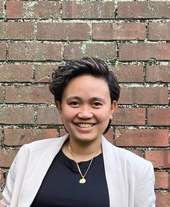

Gugma sa Kinabuhi, Paglaum sa Matag Adlaw
World-class dialysis care, closer to home.
Love for life, hope for every day. A proposed dialysis, lab and kidney care center in Cebu, run by nurses trained to U.S. standards. Most sessions are covered by PhilHealth.
156 sessions a year
for elderly patients
NEXT DIALYSIS
Wed, 6:00 AM
Chair 1 · Reminder sent to Maria
Emergency? Chest pain, trouble breathing or heavy bleeding: go to the nearest ER or call 911.
Why Life Link
Care that's safe, simple and close to your family
U.S.-level safety
Water, machines and infection control checked every shift.
Caring nurses
The same team every session, who know you and your family.
Family can help
A son or daughter can manage schedules for parents who don't use phones.
Everything on your phone
Reminders, results in plain words, and chat with your nurses.
Who we serve
A shorter journey can mean a longer, better life
Many families across Cebu travel long distances for dialysis three times a week, often with borrowed fare and no breakfast. A center in Cebu brings care closer.
- Cebu CityMain service area
- Mandaue, ConsolacionNeighboring cities
- Talisay, MinglanillaSouth Metro Cebu
- Lapu-Lapu, CordovaMactan Island
- Cebu province and islandsReferrals with travel planning

How it works
From first call to first session
- 1Register online
You, your family or your doctor fill in one form. - 2We call you
A nurse checks your records and PhilHealth, then picks a start date with you. - 3Visit and first session
We show you around and explain every step. - 4Stay connected
Use the app, let family use it, or get SMS and calls.
Services
Complete kidney care, not just a machine
Hemodialysis
Three shifts a day, Monday to Saturday, with vital signs watched the whole time.
Laboratory in Cebu
Blood chemistry and kidney tests here, so you don't need a separate trip. Other tests go to a trusted partner lab.

Fistula and access care
We check your access every session, arrange a specialist and surgery through partner hospitals, and help with the costs.
Food, fluid and daily life
A dietitian and social worker help with meals, your water limit and staying active.
Transport and meal help
With the LGU, we help eligible patients with travel costs and make sure nobody starts dialysis on an empty stomach.
Kidney health education
Classes for patients and families, and community awareness with local partners and celebrations.
Fees and coverage
Most patients pay nothing for a standard session
PhilHealth's current benefit pays ₱6,350 per session, up to 156 sessions a year (up to ₱990,600). We check eligibility and file every claim for you.
LGU letters
We track the balance
PCSO · DSWD · Malasakit
We help you apply
Senior and PWD
Discounts applied for you
HMOs and self-pay
Clear prices
Our team
International expertise, Cebuano heart

Chynna Mae Anuncio
BSN, USRN · 8+ years hemodialysis, New York

Marygael Jumao-as
BSN, PHRN, USRN
Raymund O. Señido
BSN, RN · Dialysis and critical care, Cebu
Chrysteen Jean R. Sy
Public Relations and Business Development
Rooted in Cebu
A shared spirit of hope
Cebu celebrates Sinulog with devotion, thanksgiving and unity. Life Link carries that spirit into everyday care: helping a patient reach treatment, supporting a family through hard times, and keeping good care within reach.
"Gugma sa Kinabuhi, Paglaum sa Matag Adlaw."
We welcome patients of all faiths and backgrounds. Patient stories and photos are shared only with consent, and care never depends on it.
The Life Link app
Your care, in your pocket
Session reminders, results explained simply, your water limit, and a direct line to your nurses. Available after the clinic accepts you.